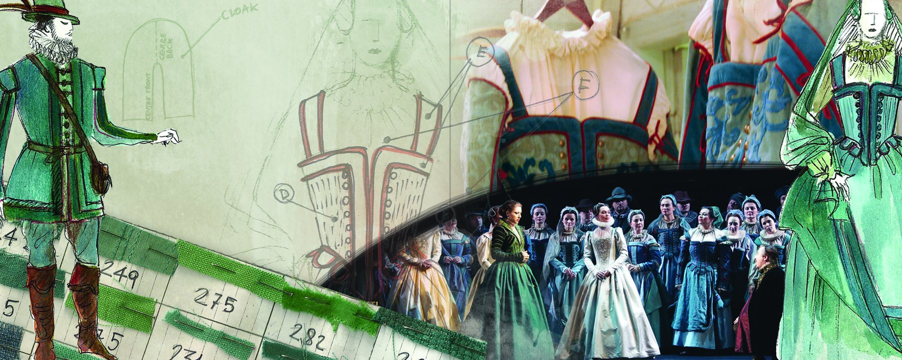
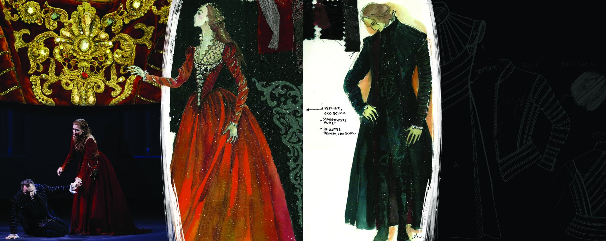
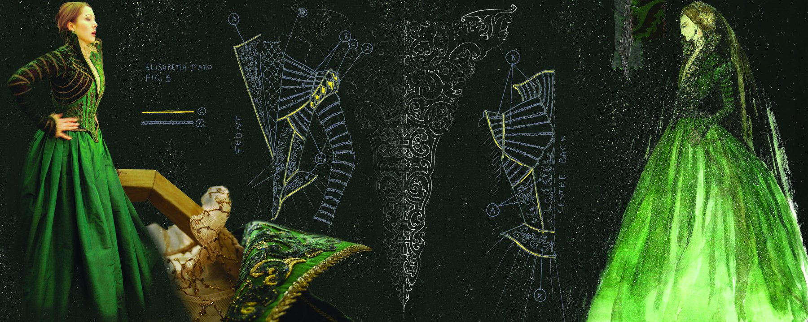

Don Carlos al Teatro Mariinsky di San Pietroburgo, 2012 — versione francese in cinque atti di Verdi, regia di Giorgio Barberio Corsetti, scene di Cristian Taraborrelli, costumi di Angela Buscemi.
Le tre pagine che seguono sono parte del book autoriale realizzato da Buscemi sui costumi della produzione. Non illustrazioni decorative ma un documento di metodologia costumistica che combina, in ciascuna tavola, i figurini ad acquerello, gli schemi tecnici di costruzione, i campioni di tessuti numerati di taglio e le foto delle realizzazioni in scena. La grammatica completa con cui un costume passa dal disegno al corpo dell'interprete.
Don Carlos at the Mariinsky Theatre in Saint Petersburg, 2012 — Verdi's French five-act version, directed by Giorgio Barberio Corsetti, sets by Cristian Taraborrelli, costumes by Angela Buscemi.
The three pages that follow are part of the authorial book made by Buscemi on the production's costumes. Not decorative illustrations but a methodology document of costume craft, combining in each plate the watercolour costume sketches, the technical construction schemes, the fabric samples numbered for cut, and the photos of the realised garments on stage. The complete grammar through which a costume passes from drawing to interpreter's body.
Don Carlos au Théâtre Mariinsky de Saint-Pétersbourg, 2012 — version française en cinq actes de Verdi, mise en scène de Giorgio Barberio Corsetti, scénographie de Cristian Taraborrelli, costumes d'Angela Buscemi.
Les trois pages qui suivent font partie du livre autoriel réalisé par Buscemi sur les costumes de la production. Non pas des illustrations décoratives mais un document de méthodologie costumière qui combine, dans chaque planche, les costumes-esquisses à l'aquarelle, les schémas techniques de construction, les échantillons de tissus numérotés de coupe et les photos des réalisations en scène. La grammaire complète par laquelle un costume passe du dessin au corps de l'interprète.
Tavola I — Coro Atto I: dal figurino al tessuto alla scena

Il coro femminile dell'Atto I raccontato in una sola tavola. A sinistra i figurini ad acquerello con le silhouette del costume (uomo verde-bianco con gorgiera, donna in verde); al centro gli schemi costruttivi dei panciotti, viste anteriore e laterale; in basso i campioni dei tessuti numerati di taglio — 249, 275, 292 — la grammatica dell'atelier che traduce il disegno in stoffa; a destra la foto del coro femminile sul palco del Mariinsky con i costumi realizzati. L'intera filiera produttiva — idea, schema, materia, scena — condensata in una sola pagina.
The Act I female chorus told on a single plate. Left, the watercolour sketches with the costume silhouettes (man in green and white with ruff, woman in green); centre, the construction schemes of the bodices, front and side views; below, the fabric samples numbered for cut — 249, 275, 292 — the atelier's grammar that translates drawing into cloth; right, the photo of the female chorus on the Mariinsky stage with the realised costumes. The whole production chain — idea, scheme, matter, stage — condensed on a single page.
Le chœur féminin de l'Acte I raconté sur une seule planche. À gauche, les costumes-esquisses à l'aquarelle avec les silhouettes (homme en vert et blanc avec collerette, femme en vert) ; au centre, les schémas de construction des corselets, vues de face et de côté ; en bas, les échantillons de tissus numérotés de coupe — 249, 275, 292 — la grammaire de l'atelier qui traduit le dessin en étoffe ; à droite, la photo du chœur féminin sur la scène du Mariinsky avec les costumes réalisés. Toute la chaîne de production — idée, schéma, matière, scène — condensée en une seule page.
Tavola II — Eboli e Don Carlos: oro, sangue, notte

La coppia in opposizione cromatica. A sinistra il dettaglio del broccato dorato della corte spagnola con la foto del confronto in scena (Don Carlos prostrato davanti a Eboli, costumi rossi e neri); al centro il figurino di Eboli in vestito rosso-bordeaux (l'Eboli che ama, mente, perde); a destra il figurino di Don Carlos in nero elegante con annotazioni dei tessuti, e la silhouette schematica delle proporzioni. La tavola lavora sul tema verdiano della corte spagnola — oro, rosso, nero — come palette politica e amorosa insieme.
The couple in chromatic opposition. Left, the detail of the gold brocade of the Spanish court with the photo of the confrontation on stage (Don Carlos prostrate before Eboli, red and black costumes); centre, the costume sketch of Eboli in a burgundy-red dress (the Eboli who loves, lies, loses); right, the costume sketch of Don Carlos in elegant black with fabric annotations and the proportional silhouette. The plate works on the Verdian theme of the Spanish court — gold, red, black — as both political and amorous palette.
Le couple en opposition chromatique. À gauche, le détail du brocart doré de la cour espagnole avec la photo de la confrontation sur scène (Don Carlos prosterné devant Éboli, costumes rouges et noirs) ; au centre, le costume-esquisse d'Éboli en robe rouge-bordeaux (l'Éboli qui aime, ment, perd) ; à droite, le costume-esquisse de Don Carlos en noir élégant avec annotations des tissus et la silhouette des proportions. La planche travaille sur le thème verdien de la cour espagnole — or, rouge, noir — comme palette politique et amoureuse à la fois.
Tavola III — Elisabetta in verde: la costruzione del corsetto

Elisabetta — la regina, la sposa contesa, la voce d'oltralpe nella corte. A sinistra la foto dell'attrice in vestito verde scuro con corsetto a stecche; al centro i blueprints tecnici del corsetto con annotazioni «Front», «Centre Back» — la traduzione del figurino in struttura sartoriale, il dialogo fra disegno e taglio; a destra il figurino di Elisabetta in tulle e velo verde, atmosfera elegiaca. La pagina insegna come una silhouette cinquecentesca regga la verità storica di Verdi senza diventare pastiche.
Elisabetta — the queen, the contested bride, the voice from across the Alps in the court. Left, the photo of the actress in a dark green dress with boned corset; centre, the technical blueprints of the corset with annotations «Front», «Centre Back» — the translation of the costume sketch into tailoring structure, the dialogue between drawing and cut; right, the costume sketch of Elisabetta in green tulle and veil, elegiac atmosphere. The page teaches how a sixteenth-century silhouette sustains Verdi's historical truth without becoming pastiche.
Élisabeth — la reine, l'épouse disputée, la voix d'outre-Alpes à la cour. À gauche, la photo de l'actrice en robe vert sombre avec corset baleinné ; au centre, les blueprints techniques du corset avec les annotations « Front », « Centre Back » — la traduction du costume-esquisse en structure de couture, le dialogue entre dessin et coupe ; à droite, le costume-esquisse d'Élisabeth en tulle et voile verts, atmosphère élégiaque. La page enseigne comment une silhouette du XVIe siècle tient la vérité historique verdienne sans devenir pastiche.
Tavole tecniche di costruzione — il book completo
Oltre alle tre tavole sintetiche, il book di Buscemi raccoglie le tavole tecniche di costruzione di ciascun personaggio e di ogni coro — le blueprints sartoriali con cui il figurino diventa pattern, taglio, struttura. Coro maschile dell'Atto I in tre varianti (Model A1, B, C), coro femminile, i protagonisti act-by-act (Don Carlos Atto II, Elisabetta Atto I, II e III, Filippo IV). Una grammatica sartoriale completa.
Beyond the three synthesis plates, Buscemi's book gathers the technical construction plates of each character and each chorus — the sartorial blueprints through which a costume sketch becomes pattern, cut, structure. Act I men's chorus in three variants (Model A1, B, C), women's chorus, the principals act-by-act (Don Carlos Act II, Elisabetta Acts I, II and III, Philip Act IV). A complete sartorial grammar.
Au-delà des trois planches de synthèse, le livre de Buscemi réunit les planches techniques de construction de chaque personnage et de chaque chœur — les blueprints de couture par lesquels un costume-esquisse devient patron, coupe, structure. Chœur masculin de l'Acte I en trois variantes (Model A1, B, C), chœur féminin, les protagonistes acte par acte (Don Carlos Acte II, Élisabeth Actes I, II et III, Philippe Acte IV). Une grammaire couturière complète.
Angela Buscemi — la mano del costume
Angela Buscemi è costumista e figurinista storica di Cristian Taraborrelli, in collaborazione ventennale con lui e con Giorgio Barberio Corsetti. La sua firma attraversa il catalogo lirico di Cristian: Don Carlos al Mariinsky (2012), Macbeth alla Scala (2013), La Belle Hélène al Châtelet (2015), La Jura al Lirico di Cagliari (2015), Frammenti Kurtág a Nuova Consonanza (2018), La Sonnambula al Teatro delle Muse di Ancona (2019), Pagliacci AR al Carlo Felice (2021). Il book che si vede in questa pagina è il documento del suo metodo: figurino come visione, schema come scrittura, tessuto come voce.
Angela Buscemi is Cristian Taraborrelli's historic costume designer and figurinist, in a twenty-year collaboration with him and with Giorgio Barberio Corsetti. Her signature runs across Cristian's operatic catalogue: Don Carlos at the Mariinsky (2012), Macbeth at La Scala (2013), La Belle Hélène at the Châtelet (2015), La Jura at the Lirico of Cagliari (2015), Frammenti Kurtág at Nuova Consonanza (2018), La Sonnambula at the Teatro delle Muse of Ancona (2019), Pagliacci AR at the Carlo Felice (2021). The book seen on this page is the document of her method: sketch as vision, scheme as writing, fabric as voice.
Angela Buscemi est la costumière et figurineuse historique de Cristian Taraborrelli, dans une collaboration vicennale avec lui et avec Giorgio Barberio Corsetti. Sa signature traverse le catalogue lyrique de Cristian : Don Carlos au Mariinsky (2012), Macbeth à la Scala (2013), La Belle Hélène au Châtelet (2015), La Jura au Lirico de Cagliari (2015), Frammenti Kurtág à Nuova Consonanza (2018), La Sonnambula au Teatro delle Muse d'Ancone (2019), Pagliacci AR au Carlo Felice (2021). Le livre vu sur cette page est le document de sa méthode : esquisse comme vision, schéma comme écriture, tissu comme voix.
Tags